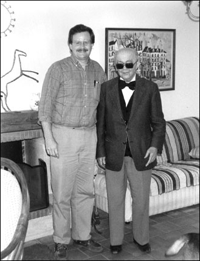
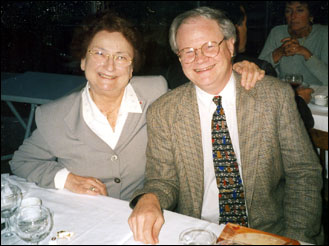

George Baker, Biography
This biography is for information only. Promoters requiring biographical information and photos for use in printed programs or publicity must contact the agent.
A native of Dallas, a young George Baker won the American Guild of Organists National Competition in Organ Playing in 1970 and created a sensation in the organ world with his subsequent featured recital for that organization's national convention two years later. He then went to Paris to study organ, improvisation and composition as well as to record. He returned to America to teach organ, then entered medical school. Almost three decades later he has come full circle, returning to music as a performer, improviser, composer, and teacher.
George Baker has received training with some of the finest organ teachers of the twentieth-century. He obtained his Bachelor's degree from Southern Methodist University under Robert Anderson, after which he traveled to Paris to study with Marie-Claire Alain, Pierre Cochereau, Jean Langlais, and André Marchal. During his time in France, Baker earned the Prix de Virtuosité with Mention Maximum from the Schola Cantorum, under Langlais. Ultimately, he returned to the United States where he earned a Master of Music degree on full scholarship from the University of Miami, a Doctor of Musical Arts from the University of Michigan, and began teaching at Catholic University in Washington D.C. before deciding to undertake the challenge of becoming a medical doctor. Although he obtained his M.D. and became a dermatologist, Dr. Baker never ceased performing, composing, teaching, and recording.
In his early years as a musician, George Baker won first prizes by unanimous jury decisions in several major organ competitions including the American Guild of Organists (Buffalo, 1970), the Grand Prix de Chartres (Chartres, France, 1974), and the International Improvisation Competition (Lyon, France, 1979). His recording credits include Complete Organ Works of J. S. Bach (1979, the first by an American) and Complete Organ Works of Louis Vierne (world premiere recording, released in 1994, a project he shared with Pierre Cochereau). He has been awarded three French Grand Prix du Disque, two of which were for Complete Organ Works of Darius Milhaud. In 1995, the eight CD Vierne set won the coveted Grand Prix Spécial du Jury from the Nouvelle Académie du Disque Français. In 2000, the same recording won a critic's choice award from American Record Guide.
George Baker's compositions, published by H. T. Fitzsimmons, Fred Bock Music, Gentry Publications, and Baroque Notes, Inc. have been performed both in the United States and in Europe. Dr. Baker has served on juries in several prestigious organ competitions including the Grand Prix de Chartres in 2000 and in 2004. Special areas of interest include the music of Louis Vierne and Maurice Duruflé, improvisation in the French style, and the organ building of Cavaillé-Coll. He is also in demand as a consultant for organ building and restoration projects.
Currently, Dr. Baker teaches organ improvisation at Rice University in Houston, Texas. Among other musical projects, he is working on an organ improvisation workbook, which will be published in late 2013.
George Baker first appeared on the roster of Karen McFarlane Artists, Inc. as a young artist, to which he has returned at the beginning of the new millennium. He was a featured artist at the 2004 AGO National Convention in Los Angeles.
Page updated April, 2013.
Related Photographs
George Baker and Jean Langlais
Marie-Claire Alain and George Baker